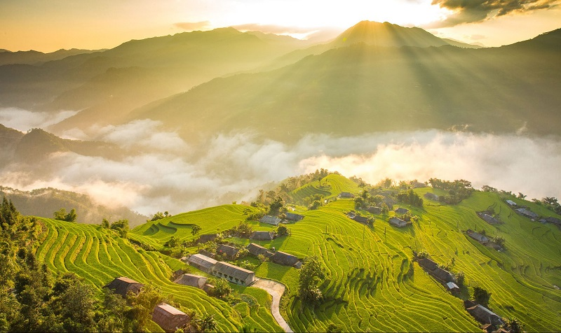
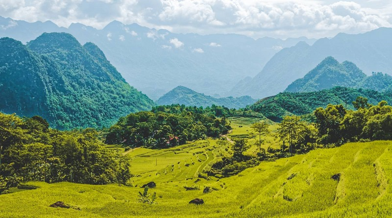
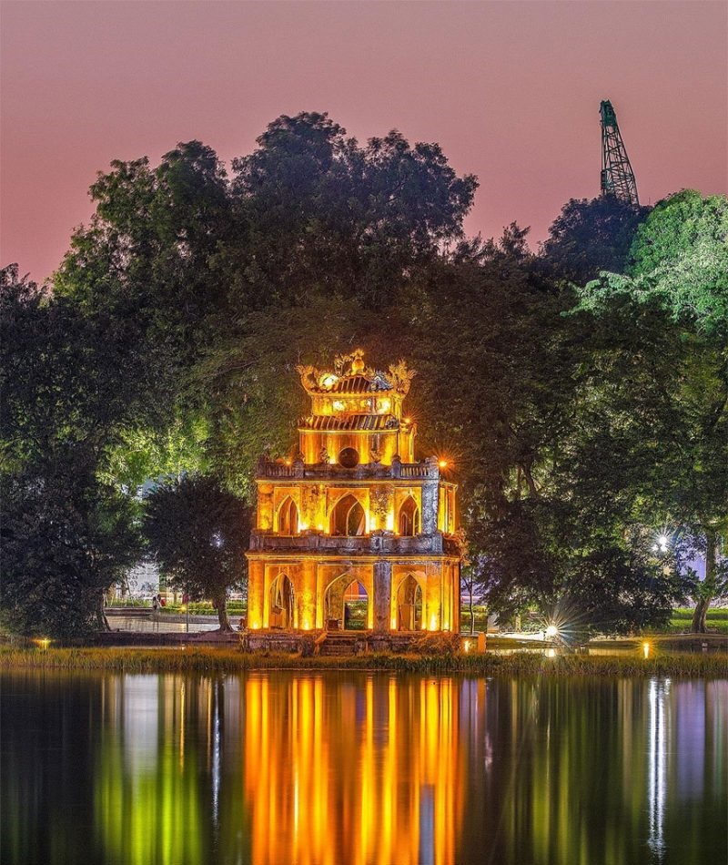
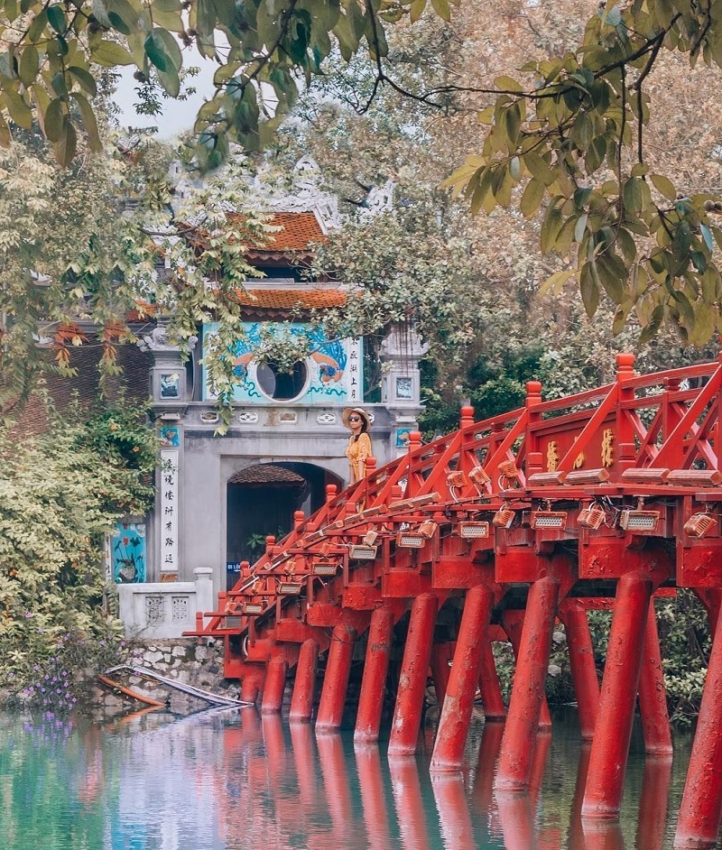
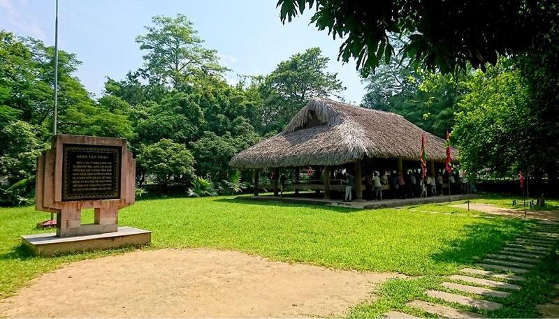
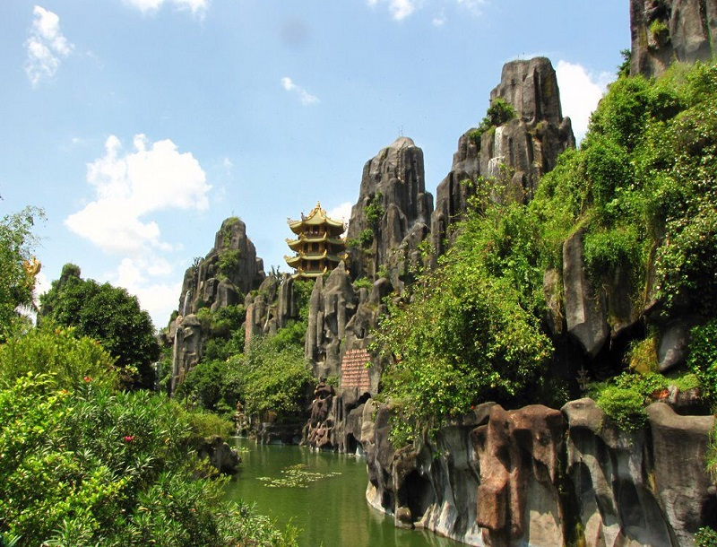
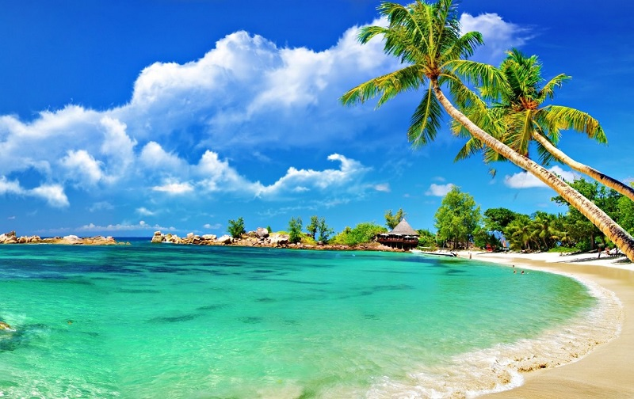
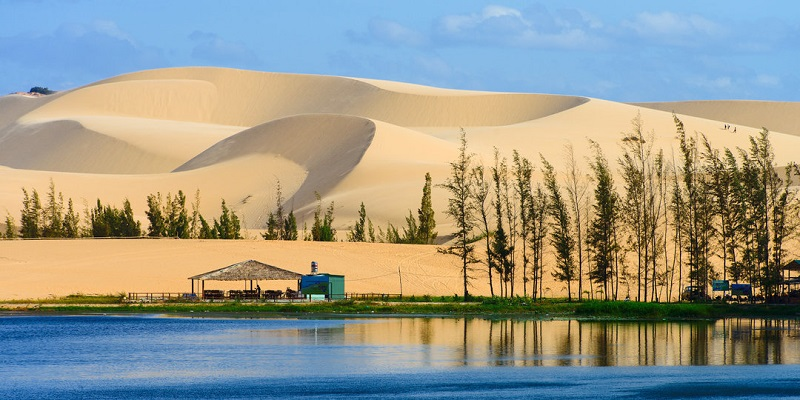
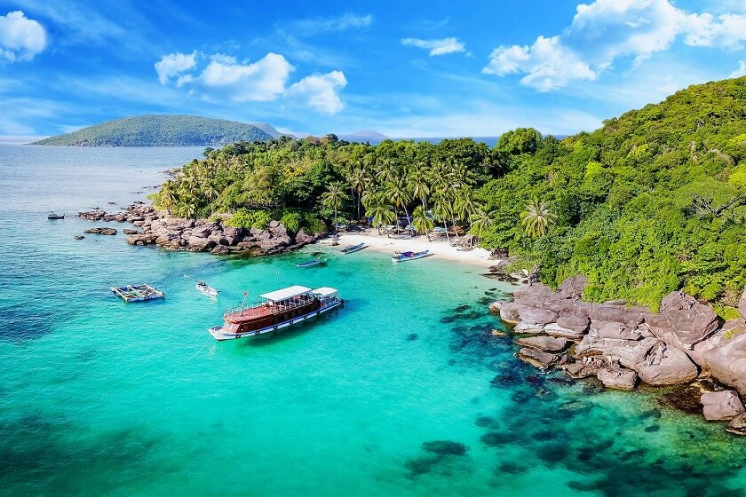

Đất nước Việt Nam đang trở thành một trong những điểm đến hàng đầu thế giới nhờ vẻ đẹp thiên nhiên tuyệt vời. Cảnh đẹp Việt Nam từ Bắc vào Nam có thể nói là vô tận, từ những cánh đồng lúa và ruộng bậc thang xanh tươi ở phía Bắc đến sự nhộn nhịp của đồng bằng sông Cửu Long ở phía Nam. Hãy cùng mình tìm hiểu về các địa danh và danh lam thắng cảnh Việt Nam nổi tiếng thế giới qua bài viết dưới đây nhé!
Vịnh Hạ Long là một trong những danh lam thắng cảnh Việt Nam được UNESCO công nhận. Nơi đây được biết đến với vùng nước màu ngọc lục bảo, hàng trăm hòn đảo đá vôi và vô số hang động khổng lồ.

Xứng đáng là một kỳ quan thế giới ở Việt Nam, tới đây bạn sẽ được chiêm ngưỡng một khung cảnh tuyệt đẹp mà tạo hóa đã ban tặng. Có lẽ chính vì vậy mà vịnh Hạ Long luôn là một trong những điểm thu hút khách du lịch trong và ngoài nước ở miền Bắc nước ta.
Ngoài ngồi trên thuyền ngắm nhìn phong cảnh vịnh, bạn còn có thể chèo thuyền kayak, lặn biển, đi bộ đường dài, đi xe đạp và tham gia các hoạt động ngoài trời khác tại kỳ quan Việt Nam này nhé!
Nằm ở đồng bằng sông Hồng của Việt Nam, quần thể danh thắng Tràng An được UNESCO công nhận là di sản thế giới vào năm 2014. Đây cũng là một trong các danh lam thắng cảnh ở Việt Nam sở hữu các đỉnh núi đá vôi, tương tự như những gì bạn thường thấy ở Hạ Long.

Có diện tích gần 12,000 ha, quần thể danh thắng Tràng An bao gồm ba khu vực: khu hang động Tràng An, khu Cố đô Hoa Lư và khu chùa Bái Đính. Ba khu vực được điểm xuyến bằng những đỉnh núi đá vôi, hang động thạch nhũ ấn tượng. Bao bọc xung quanh là những dòng sông tuyệt đẹp cùng những vách đá dốc đứng.
Nhắc đến Ninh Bình chắc chắn sẽ không thể bỏ qua Tam Cốc Bích Động – một trong những cảnh đẹp nhất Việt Nam cũng như Ninh Bình. Bật mí cho bạn, Tam Cốc có 3 hang động nép mình trong một cảnh quan Việt Nam tuyệt đẹp. Xung quanh được trang trí với những nhũ đá và măng đá tuyệt đẹp với hình dạng và màu sắc khác nhau lấp lánh như đá quý.

Với sự kết hợp hài hòa tuyệt vời giữa những hang động tuyệt đẹp, những dòng nước quyến rũ và màu sắc, hình dạng của nhũ đá quyến rũ đến nỗi không ai có thể quên được vẻ đẹp của danh lam thắng cảnh nổi tiếng ở Việt Nam này sau khi ghé thăm.
Thánh địa Mỹ Sơn là một danh lam thắng cảnh Việt Nam nổi tiếng được UNESCO công nhận. Có thể bạn chưa biết nhưng đây là một trong những kiến trúc còn sót lại của nền văn minh Champa cổ đại cách đây hơn 1,600 năm.

Nép mình dưới bóng của núi Răng Mèo, bao quanh là một thung lũng xanh, một vài trong số những ngôi đền này vẫn đứng vững. Thánh địa Mỹ Sơn sở hữu nhiều tác phẩm điêu khắc bằng đá, đền thờ và tháp đẹp. Khi đến thăm Mỹ Sơn, bạn sẽ có cảm giác giống như được quay ngược thời gian để khám phá nét văn hóa đặc biệt này.
Trong danh sách danh lam thắng cảnh Việt Nam nổi tiếng thế giới, chắc chắn không thể thiếu Sapa – một thị trấn ở phía Tây Bắc cách không xa biên giới Trung Quốc.

Sa Pa sở hữu những điểm đến tuyệt vời như những cánh đồng ruộng bậc thang hùng vĩ, thung lũng Mường Hoa giữa thị trấn và núi Fansipan… Tại đây, bạn có thể bắt gặp được khá nhiều dân tộc thiểu số từ người H’mông, Tày đến Dao… Khám phá cuộc sống của người dân cũng là một trải nghiệm mà bạn nên thử.
Nằm ở phía Bắc Việt Nam, phía Đông Bắc của Sapa và dọc biên giới Trung Quốc, tỉnh Hà Giang là nơi cuối cùng của biên giới Việt Nam. Với những con đường gồ ghề và ngọn núi hùng vĩ, Hà Giang sở hữu một số cảnh quan tráng lệ nhất và những ngọn núi đẹp nhất Việt Nam.
Xe máy là phương thức di chuyển được nhiều người lựa chọn phổ biến khi khám phá Hà Giang. Nhắc đến Hà Giang chắc chắn không thể bỏ qua cao nguyên đá Đồng Văn – một trong các danh lam thắng cảnh nổi tiếng ở Việt Nam đáng để khám phá nhất Hà Giang.
Trên con đường chinh phục cao nguyên đá Đồng Văn sẽ dẫn bạn qua những ruộng bậc thang, thung lũng tuyệt đẹp, cao nguyên đá vôi và hẻm núi sâu. Ngoài ra, Cổng Trời và đèo Mã Pí Lèng huyền thoại là hai trong số những điểm đến đẹp nhất.
Thác Bản Giốc là thác nước nổi tiếng nhất Cao Bằng và là một trong những danh lam thắng cảnh Việt Nam ấn tượng nhất. Nằm ở phía đông bắc Việt Nam, trên biên giới Việt Nam – Trung Quốc.

Thác Bản Giốc tự hào với cảnh quan thiên nhiên ấn tượng với nhiều tầng nước và màu xanh ngọc bích chảy xuống hồ nước khổng lồ bên dưới. Thác nước này là nơi hoàn hảo cho những ai thích gần gũi với thiên nhiên, muốn tránh xa sự tấp nập của những thành phố lớn.
Thung lũng Mai Châu là một trong những danh lam thắng cảnh nổi tiếng ở Việt Nam không chỉ với du khách quốc tế mà còn cả du khách trong nước. Thung lũng bình dị cùng những cánh đồng lúa xanh tuyệt đẹp sẽ khiến bạn cảm thấy như đang lạc vào thiên nhiên với những khu rừng xanh, những ngọn đồi thoai thoải và những ngôi nhà sàn.
Mai Châu thực sự là nơi dành cho những người tìm kiếm sự an yên, một khu vực không có tiếng ồn ào của thành thị và tận hưởng với những điều bình dị, đơn giản. Khám phám cảnh đẹp thiên nhiên Việt Nam bạn đừng quên ghé tới Mai Châu nhé!
Nhắc đến các danh lam thắng cảnh ở Hà Nội chắc chắn sẽ không thể thiếu cái tên Hồ Hoàn Kiếm hay còn gọi là Hồ Gươm. Không chỉ là một điểm đến quen thuộc của người dân địa phương mà bất kì du khách nào khi tới thủ đô cũng muốn một lần đặt chân đến Hồ Gươm.
Cái tên Hoàn Kiếm này bắt nguồn từ một truyền thuyết khi vua Lê Lợi được ban cho một thanh kiếm thần dùng để xua đuổi quân Trung Quốc xâm lược. Sau chiến tranh, Thần rùa đã đến lấy lại thanh kiếm và biến mất tại hồ này nên được đặt là hồ Hoàn Kiếm.
Mặc dù không phải là hồ lớn nhất Việt Nam thế nhưng nơi đây lại có ý nghĩa vô cùng quan trọng. Ngoài ra, gần hồ còn có ngôi đền Ngọc Sơn với chiếc cầu Thê Húc màu đỏ son rất đẹp nữa đó!
Sẽ là một thiếu sót lớn trong danh sách danh lam thắng cảnh Việt Nam nổi tiếng thế giới nếu không nhắc đến cố đô Huế! Đây từng là kinh đô của Việt Nam dưới triều nhà Nguyễn – vương triều cuối cùng của Việt Nam. Có lẽ chính vì vậy mà nơi đây có ý nghĩa đặc biệt trong lịch sử đất nước.
Cố đô Huế là một trong những thành phố quyến rũ và xinh đẹp nhất nhờ vị trí địa lý tuyệt vời nằm bên bờ sông Hương thơ mộng. Không những mang một lịch sử lâu đời mà kiến trúc của kinh thành Huế cổ xưa đến các lăng tẩm bí ẩn cũng là điều thu hút du khách. Khi đến Huế bạn còn có cơ hội khám phá những món đặc sản vô cùng đặc sắc nữa đó!
Cố đô Huế là nơi sở hữu cảnh đẹp quê hương Việt Nam và danh lam thắng cảnh nổi tiếng, đặc biệt là những ngôi chùa cổ nổi tiếng của Việt Nam. Và ngôi chùa cổ xưa nhất mà bạn không thể bỏ qua khi đến Huế chính là chùa Thiên Mụ.

Ngôi chùa không chỉ được coi là biểu tượng trong các bài thơ lãng mạn hay những bài hát trữ tình mà còn được coi là ngôi chùa linh thiêng và đẹp nhất. Không dừng lại ở đó, chùa Thiên Mụ hiện là ngôi chùa cao nhất Việt Nam và là một trong những danh lam thắng cảnh ở Việt Nam với cấu trúc 7 tầng nằm ở bờ bắc sông Hương.
Ngôi chùa này được xây dựng vào năm 1601 dưới thời cai trị của các vị lãnh chúa Nguyễn. Ngôi chùa ban đầu được xây dựng rất đơn giản, nhưng theo thời gian, nó đã được phát triển lại và mở rộng với các cấu trúc thiết kế phức tạp hơn.
Khu di tích Tân Trào là một địa danh nổi tiếng ở Việt Nam dành cho những ai yêu thích khám phá các di tích cũng như tìm hiểu thêm về lịch sử đất nước. Cách thị trấn Tuyên Quang 40 km và cách Hà Nội 200km, Tân Trào từng là căn cứ chủ chốt của bộ đội ta trong cuộc kháng chiến Cách mạng Tháng Tám năm 1945.
Là một di tích lịch sử Việt Nam nổi tiếng, đến với Tân Trào bạn nên ghé thăm Lán Nà Lừa nơi Bác Hồ trình bày lời cam kết giành độc lập dân tộc trước đại hội toàn quốc. Ngôi nhà lán nhỏ này trên sườn núi Nà Lừa, cách làng Tân Lập khoảng 1km về phía Đông.
Quy Nhơn là một thành phố biển đảo không thể bỏ qua khi nói đến các địa danh nổi tiếng ở miền Trung. Mặc dù không nổi tiếng bằng Nha Trang hay đảo Phú Quốc về các bãi biển hay khu nghỉ dưỡng cao cấp, Quy Nhơn bù lại có những nét quyến rũ riêng với những điểm tham quan chắc chắn sẽ làm bạn kinh ngạc, đặc biệt là đảo Kỳ Co nổi tiếng.
Kỳ Co thuộc xã đảo Nhơn Lý cách trung tâm thành phố khoảng 25 km. Nơi đây sở hữu một bãi biển tuyệt vời và làn nước trong vắt đến mức bạn chỉ muốn nhanh chóng đắm mình vào làn nước xanh mát ấy. Ngoài ra, bãi Dứa tại Kỳ Co còn là điểm đến lý tưởng cho những ai muốn trải nghiệm cảm giác lặn ngắm san hô nhiều màu và thưởng thức hải sản tươi ngon.
Một trong những địa danh nổi tiếng ở Việt Nam không thể bỏ lỡ khi đến miền Trung chính là bãi biển Mỹ Khê. Với bãi cát dài trắng nguyên sơ, nước trong xanh và bầu trời đầy nắng, bãi biển là địa điểm thư giãn yêu thích của du khách trong và ngoài nước.
Nhiều khách sạn và quán cà phê cũng nằm trong khoảng cách đi bộ đến bãi Mỹ Khê, làm cho nó trở thành một trong các cảnh đẹp ở Việt Nam lý tưởng dành cho những ai đang muốn tìm kiếm những khung cảnh đáng kinh ngạc.
Khi nhắc đến tên các ngọn núi ở Việt Nam, không thể không đề cập đến dãy núi Ngũ Hành Sơn nằm ở phía nam Đà Nẵng. Tuy không quá hùng vĩ thế nhưng chúng lại có ý nghĩa quan trọng. Năm đỉnh núi này được đặt tên theo năm yếu tố ngũ hành: Kim, Mộc, Hỏa, Thủy và Thổ.
Ngũ Hành Sơn sở hữu nét đẹp như tranh vẽ và cũng là nơi có vô số hang động, một số hang động chứa các ngôi chùa Phật giáo và những hang động khác được sử dụng làm nơi tôn nghiêm và bệnh viện trong Chiến tranh Việt Nam.
Hội An là một trong các địa danh nổi tiếng ở Việt Nam nằm gần dòng sông Thu Bồn, trên vùng đồng bằng ven biển của tỉnh Quảng Nam, cách thành phố Đà Nẵng khoảng 30 km về phía nam.

Được công nhận là một trong những di sản thế giới của UNESCO, phố cổ Hội An sở hữu những con đường cũ được bao quanh bởi những ngôi làng yên bình có các nghề thủ công như mộc, làm đồ đồng, gốm sứ, v.v. mang đậm nét văn hóa Việt Nam, Trung Quốc và Nhật Bản.
Cù Lao Chàm bao gồm 8 hòn đảo nhỏ cách bãi biển Cửa Đại – Hội An 148 km, một trong số đó đã được UNESCO công nhận là khu dự trữ sinh quyển thế giới. Trên các đảo của Cù Lao Chàm, có rất nhiều cổ vật chứng minh sự tồn tại của nền văn minh Chăm và người Việt trong quá khứ.
Bên cạnh đó, Cù Lao Chàm còn là một trong các danh lam thắng cảnh nổi tiếng ở Việt Nam dành cho những ai muốn trải nghiệm một ngày lặn biển tuyệt vời nhất. Bên cạnh đó, bạn cũng có thể đi dạo khám phá những làng chài và bãi biển hoang sơ để tắm nắng và tham gia những hoạt động thể thao dưới nước.
Phong Nha Kẻ Bàng được tạo thành từ hàng trăm hệ thống hang động, nhưng lớn nhất và đáng chú ý nhất chính là Hang Sơn Đoòng. Là một trong những hang động lớn nhất thế giới, hang Sơn Đoòng là một trong những cảnh đẹp nhất trên thế giới được UNESCO công nhận với vẻ đẹp tuyệt vời giữa nước và đá vôi tạo ra những hình thù kỳ lạ.
Bên trong hang động, bạn sẽ có cơ hội nhìn thấy một thảm thực vật rừng nguyên sinh với vẻ đẹp vô cùng phong phú và đa dạng có thể khiến bất kỳ du khách nào cũng phải choáng ngợp. Có lẽ chính vì vậy mà rất nhiều du khách nước ngoài cho rằng Sơn Đoòng là một trong những nơi đẹp nhất Việt Nam và cả thế giới.
Với những bãi biển cát mịn và đẹp, thác nước xanh mát, dãy núi hoang sơ, và một nền văn hóa độc đáo, Nha Trang là một địa điểm du lịch tuyệt vời. Và một trong các danh lam thắng cảnh Nha Trang không thể bỏ lỡ chính là Tháp Chàm Po Nagar.

Đây là một kiến trúc gạch đỏ vuông có mái hình thon và được xây dựng từ thế kỷ thứ 8 đến thế kỷ thứ 11 bởi người Chăm để tôn vinh nữ thần Po Nagar – dịch ra tiếng Việt nghĩa là “Người mẹ của đất nước ” – được cho là người đã dạy các kỹ năng dệt và nông nghiệp cho người Chăm.
Thành phố Đà Lạt là một trong những địa điểm du lịch sở hữu nhiều phong cảnh thiên nhiên đẹp nhất Việt Nam. Không những thế, thành phố này vẫn còn giữ lại nhiều kiến trúc thuộc địa của Pháp mang lại cảm giác khác biệt với nhiều thành phố khác ở Việt Nam.

Được bao quanh bởi các đồn điền cà phê, hoa và vườn cây ăn trái thay vì những cánh đồng lúa truyền thống làm tăng thêm nét quyến rũ của Đà Lạt. Du lịch Đà Lạt nhiều năm trở lại đây đang rất phát triển. Do đó, nếu như bạn muốn khám phá cảnh đẹp đất nước Việt Nam thì hãy ghé tới đây nhé!
Ngoài ra nếu bạn muốn chuyến du lịch của mình có nhiều điều thú vị và hấp dẫn. Bạn có thể chọn đi du lịch Đà Lạt theo tour, hiện nay Đà Lạt có rất nhiều chương trình tour Đà Lạt 1 ngày giá rẻ và chất lượng rất tốt. Khi tham gia tour bạn sẽ được biết được nhiều người bạn mới từ những vùng miền khác nhau. Bạn có thể xem các chương trình tour Đà Lạt 1 ngày ưu đãi hấp dẫn ngay tại đây: Tour Đà Lạt 1 ngày giá rẻ
Côn Đảo là một trong những quần đảo sở hữu phong cảnh đẹp ở Việt Nam, gồm 16 đảo nhỏ hầu hết không có người ở ngay ngoài bờ biển phía Nam của Việt Nam, mỗi nơi đều có những bãi biển mở rộng rợp bóng cây xanh.
Hầu hết du khách đến Côn Đảo với mục đích tận hưởng những bãi biển tuyệt đẹp và vẻ đẹp phong phú dưới lòng đại dương xanh. Tuy nhiên, nếu bạn là người yêu thích lịch sử, bạn vẫn có thể khám phá và tìm hiểu về danh thắng Việt Nam tại một số tòa nhà tù Côn Đảo còn sót lại.
Nhắc đến những nơi có phong cảnh đẹp nhất Việt Nam quả là thiếu sót nếu như không có Mũi Né. Không chỉ có bãi biển trong vắt thôi đâu nhé! Một trong những “đặc sản” của Mũi Né đó chính là các cồn cát trắng mịn trải dài vô cùng vô tận.
Không những vậy, ở Mũi Né còn có thêm rất nhiều điểm đến thú vị mà chắc chắn bạn sẽ cảm thấy thích thú. Nếu sắp tới bạn đang có kế hoạch đến Mũi Né thì hãy tham khảo những kinh nghiệm khám phá Mũi Né Bình Thuận từ A-Z nhé!
Nằm trong danh sách danh làm thắng cảnh miền Nam chắc chắn sẽ không thể thiếu nhà thờ Đức Bà. Đây cũng chính là một trong những địa danh nổi tiếng ở Việt Nam được xây dựng vào cuối thế kỷ 19 và mang ảnh hưởng sâu đậm trong phong cách kiến trúc Châu Âu.
Với chiều cao gần 60 mét, nhà thờ này sở hữu những nét đặc trưng của thời tân La Mã, như hai tháp chuông khổng lồ (chứa sáu chiếc chuông đồng), cửa sổ kính màu trang trí công phu và mặt tiền bằng gạch đỏ bắt mắt. Những viên gạch được nhập khẩu từ Pháp cũng làm một điểm nhấn cực kỳ độc đáo.
Địa đạo Củ Chi là một trong những địa danh Việt Nam nổi tiếng nhất mang dấu ấn lịch sử, một công trình đường hầm dưới lòng đất độc đáo của những người lính Việt Nam vào năm 1948. Khu di tích này có hơn 120km đường hầm dưới lòng đất, với một số khu vực dùng để bẫy quân địch, khu vực sinh hoạt, nhà bếp, kho lưu trữ, kho vũ khí, bệnh viện và trung tâm chỉ huy.
Khi đến địa đạo Củ Chi, bạn có thể trải nghiệm nhiều hoạt động thú vị chẳng hạn như chui theo các tuyến đường hẹp của đường hầm. Trước khi vào các đường hầm dưới lòng đất, bạn cũng sẽ được xem một đoạn phim ngắn về địa đạo để hiểu thêm về hệ thống đường hầm hoạt động như thế nào.
Thêm một danh lam thắng cảnh ở miền Nam cho bạn tham khảo chính là đồng bằng sông Cửu Long – tọa lạc ở khu vực sông Mê Kông đổ ra biển. Đây là một khu vực rất màu mỡ và tươi tốt, được bao phủ bởi những cánh đồng lúa và những cảnh đẹp ở Việt Nam bình dị.
Để khám phá cuộc sống thanh bình ở đồng bằng sông Cửu Long, bạn phải đi trên những con xuồng để có thể ngắm nhìn những thị trấn, khu chợ nổi nhộn nhịp tương phản với sự tĩnh lặng của những dòng sông Mê Kông trong khung cảnh xanh mát. Và đừng quên thử những loại trái cây thơm ngon khi đến chợ nổi nhé!
Trong bài viết “Đảo lớn nhất Việt Nam là đảo nào?” trước đây mình đã từng chia sẻ, đảo Phú Quốc chính là hòn đảo lớn nhất Việt Nam và là một địa điểm không thể bỏ lỡ khi giới thiệu về danh lam thắng cảnh Việt Nam nổi tiếng thế giới.
Hòn đảo này sở hữu những khu rừng nhiệt đới nguyên sơ, những rạn san hô còn nguyên vẹn và những bãi biển cát trắng tuyệt vời. Một trong những bãi biển nổi tiếng nhất chính là Bãi Dài – nơi được tạp chí ABC News bình chọn là một trong năm bãi biển đẹp và sạch nhất Đông Nam Á.
Trên đây là tổng hợp những danh lam thắng cảnh và cảnh đẹp nhất Việt Nam nổi tiếng thế giới đáng để một lần đặt chân đến. Hy vọng những gợi ý này sẽ giúp bạn lựa chọn cho mình một địa điểm du lịch phù hợp để có những trải nghiệm tuyệt vời nhất!